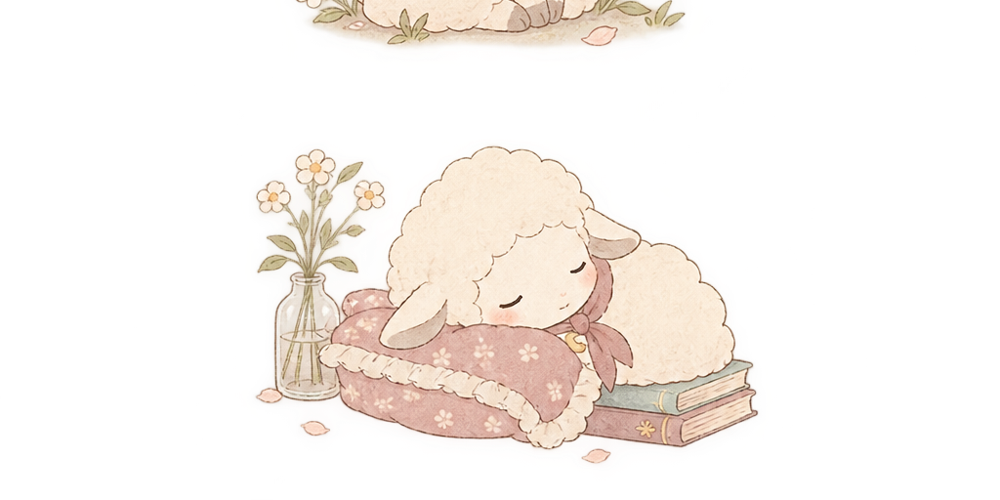

マルチリポジトリからモノレポへ
複数リポジトリに分散していたフロントエンド資産をモノレポ構成に統合。依存関係の一元管理とCIの共通化により、リリースサイクルを短縮しました。
note記事を読む →Web Engineer
業務ではモノレポ化やAI駆動開発に取り組みながら、
休日は子どもと一緒に考えたゲームや学習アプリをつくっています。
Webアプリケーションエンジニア。業務では既存プロダクトの開発基盤の改善や新しい開発フローの導入を担当。個人では「誰かの日常にちょっと寄り添うアプリ」をテーマに、子ども向けから健康管理まで幅広く作っています。
フロントエンド・バックエンドの両面を担当し、複数のクライアントワークに従事。
開発基盤の整備を主導。リポジトリのモノレポ化、npmからpnpmへの移行などを実施。
Claude Codeを用いた開発フローをチームに提案・導入。並行して個人開発でも積極的に活用。
これまでの実務経験と個人開発の両方を活かせる環境を探しています。
業務の中で取り組んだ、開発体験を良くするための工夫です。
複数リポジトリに分散していたフロントエンド資産をモノレポ構成に統合。依存関係の一元管理とCIの共通化により、リリースサイクルを短縮しました。
note記事を読む →node_modulesの肥大化とインストール速度の課題を解消するため、pnpmへ移行。ワークスペース設計を見直し、CI実行時間を短縮しました。
note記事を読む →Claude Codeをチーム開発に取り入れ、設計レビューや実装の一部を任せるフローを構築。導入の壁と、実際に効果のあった使い方をまとめています。
note記事を読む →個人で企画から開発まで手がけたアプリです。

アプリに登場するキャラクターたちです。
「ピコとけいさん1年生」のガイド役。SVGアニメーションで動くキャラクターで、黄緑・水色・ピンクの仲間もいます。
「だんごむしのぼうけん」の主人公。丸まったり歩いたり、子どもと一緒に考えた動きで冒険します。

「頭痛手帳」に登場する、赤いスカーフの女の子と青いスカーフの男の子。気分に合わせて切り替えて使えます。
開発の工夫やキャリアについて、noteで書いています。